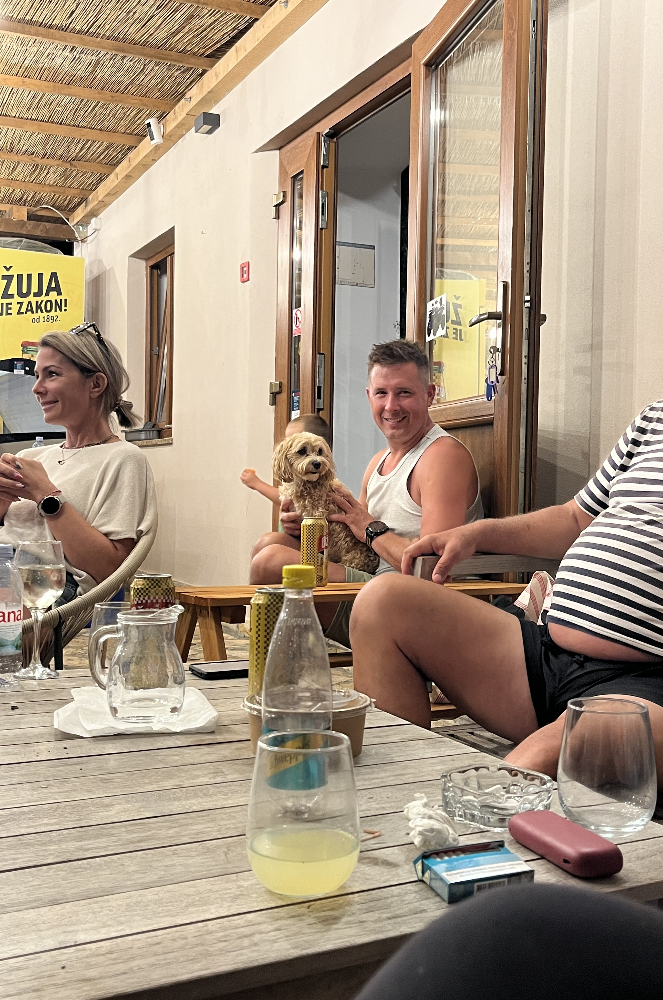
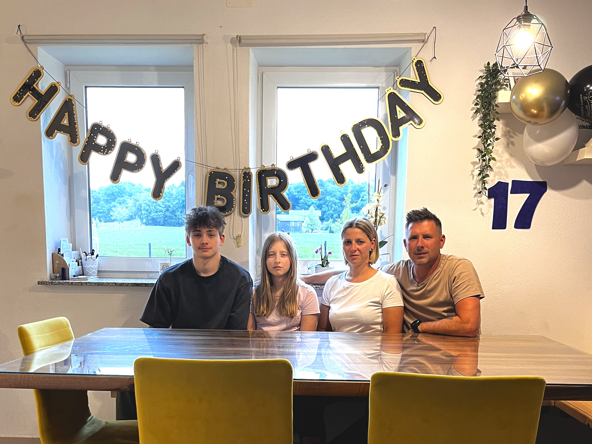
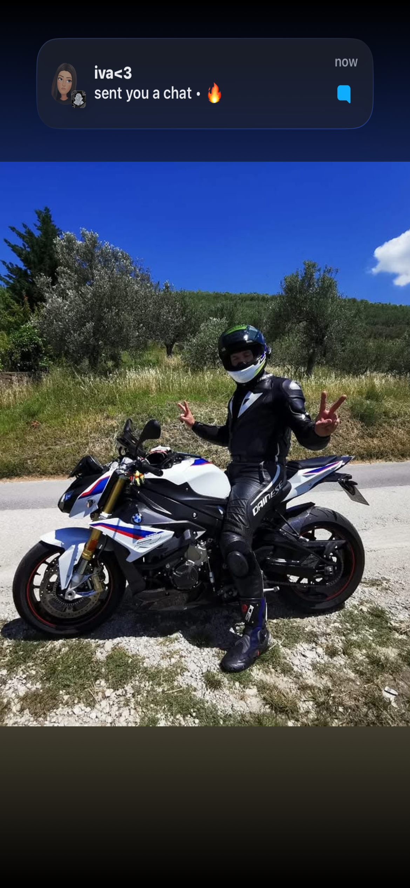
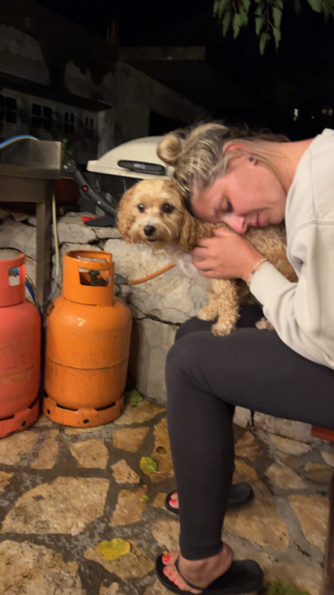
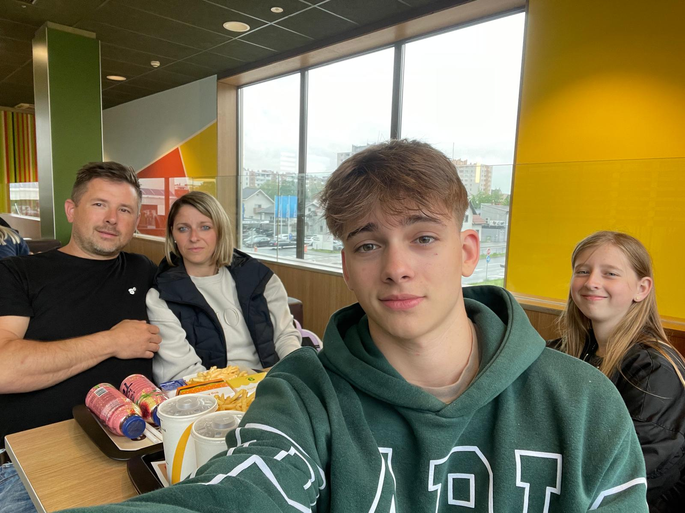

Tina Bonifarti je prijazna in nasmejana oseba, ki dela kot pomočnica zobozdravnice v Gornji Radgoni. Vsak dan pomaga pacientom, skrbi za urejenost ordinacije in pomaga pri posegih. Zelo rada dela z ljudmi in vedno poskrbi, da se pacienti počutijo udobno.
V prostem času rada preživlja čas z družino, posluša glasbo in hodi na sprehode. Je zelo organizirana in odgovorna oseba.





To so družinski trenutki, ki jih Tina zelo ceni.
Tina je odraščala v prijetnem okolju.
Vedno je bila pridna in marljiva.
V šoli je rada pomagala drugim.
Izbrala je zdravstveno smer.
Usposobila se je za delo v zobozdravstvu.
Rada ima red in organizacijo.
Vedno pride pravočasno.
Je zelo zanesljiva.
Pacienti jo imajo radi.
Vedno ima nasmeh na obrazu.
Rada preživlja čas z družino.
Uživa v naravi.
Rada posluša glasbo.
Včasih gre na izlete.
Rada pomaga drugim.
Snapchat: n_21088
Email: tina@gmail.com